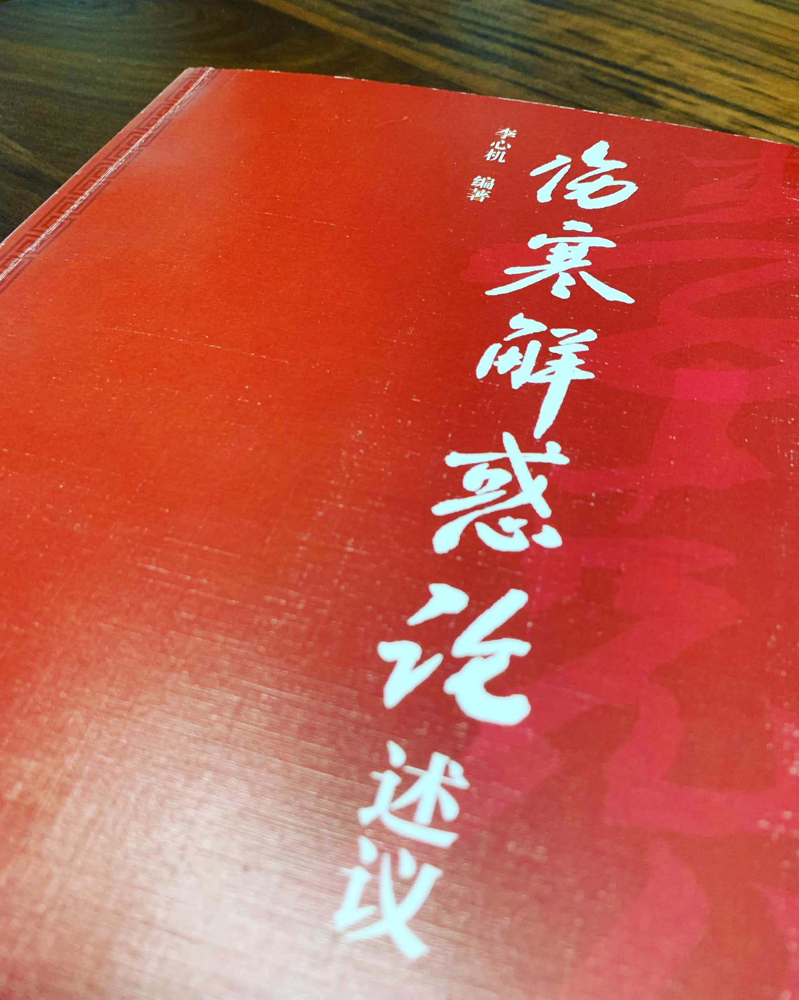

[傷寒解惑論述議]
[傷寒解惑論述議]
李克紹李心機這一師承體系對傷寒的論述，一直都是我很喜歡的學習角度，在對於歷代各家註解深厚的學習為前提，做出有別於歷代各注家的解釋，中立、客觀、又符合臨床分析，真的很佩服這些大前輩的治學態度與行動！
這本述議是建構在解讀李克紹《解惑論》的基礎上而成的，讀這本等同於也把解惑論讀起來了。非常推薦喜歡傷寒的人可以找來讀，《解惑論》從比較高的角度串解三陰三陽病，跳脫初始一條一條的視角，使讀者能對於整本傷寒的邏輯能有比較清楚的理解，裡面我非常喜歡「六經串講」的部分，還有對於「傳、轉屬、轉繫」的概念解讀，還有很大一部分是對於各方證歷來的錯誤注解導致讀不清、用不上的澄清跟他個人的見解與運用，也是非常精彩！可以說整本書沒有一處冷場，只有看完能學起來多少的問題，是本我還會想再看一次的好書！推薦五星🤩🤩🤩
#傷寒解惑論述議
#中醫閱讀
